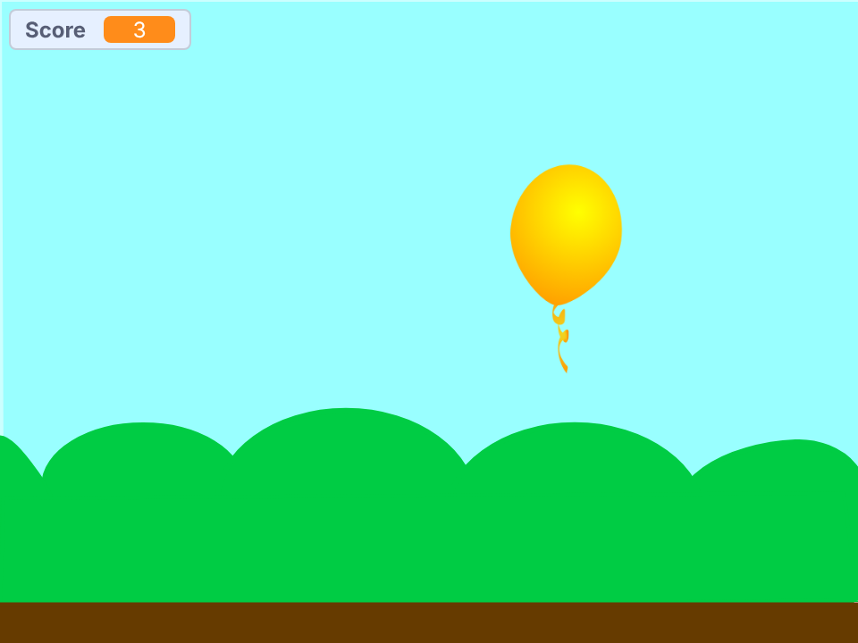

Scratch · Week 4

Balloon Pop · Everyone together
Everything today goes on the balloon. Click it under the stage before you add blocks.
Balloon Pop · Mission 1
When you click the balloon, it makes a Pop sound and jumps somewhere new.
BLOCKS YOU NEED
when this sprite clickedNEWyellow Events
start sound [Pop v]pink Sound
go to (random position v)blue Motion
Test it: click the balloon. Pop! It jumps.
IT LOOKS LIKE THIS
when this sprite clicked start sound [Pop v] go to (random position v)
Balloon Pop · Mission 2
Click Variables, then Make a Variable. Name it Score. Every pop adds 1. The green flag starts it at 0.
BLOCKS YOU NEED
change [Score v] by (1)under the Pop script
when flag clickeda new script
set [Score v] to (0)under the green flag
Test it: click the green flag, then pop. Score goes up.
IT LOOKS LIKE THIS
when flag clicked set [Score v] to (0)
when this sprite clicked start sound [Pop v] go to (random position v) change [Score v] by (1)
Balloon Pop · Mission 3
Every pop, the balloon changes colour. Balloon1 has three: blue, yellow and purple.
BLOCKS YOU NEED
next costumepurple Looks · at the bottom of the Pop script
Test it: pop it three times. Blue, yellow, purple.
IT LOOKS LIKE THIS
when flag clicked set [Score v] to (0)
when this sprite clicked start sound [Pop v] go to (random position v) change [Score v] by (1) next costume
Balloon Pop · Mission 4
Every pop, the balloon gets a bit smaller, so it's harder to click. The green flag makes it big again.
BLOCKS YOU NEED
change size by (-5)bottom of the Pop script
set size to (100) %under the green flag
Test it: pop it lots. It shrinks. Green flag: big again.
IT LOOKS LIKE THIS
when flag clicked set [Score v] to (0) set size to (100) %
when this sprite clicked start sound [Pop v] go to (random position v) change [Score v] by (1) next costume change size by (-5)
Balloon Pop · All four work?
Balloon Pop · The code · Last 10 minutes
when flag clicked set [Score v] to (0) set size to (100) %
when this sprite clicked start sound [Pop v] go to (random position v) change [Score v] by (1) next costume change size by (-5)
Balloon Pop · Time's up